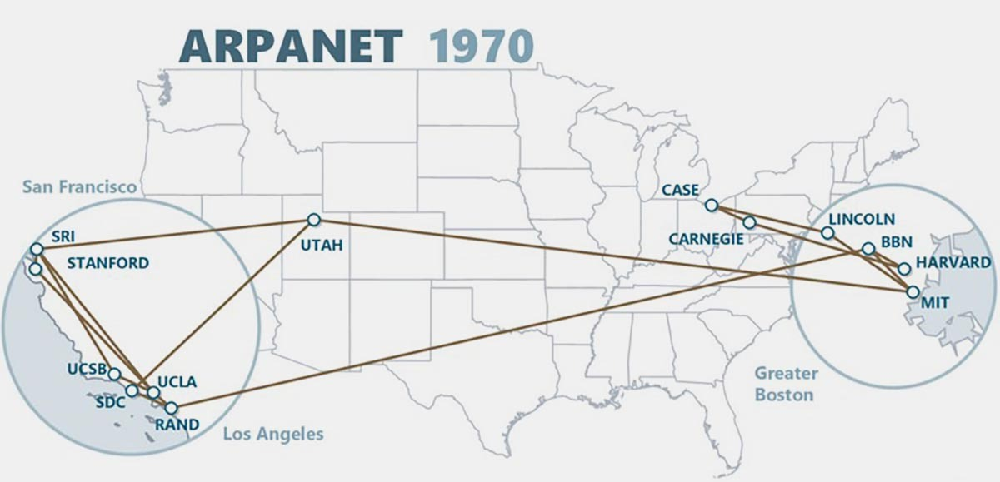

ARPANET
ARPANET (Advanced Research Projects Agency Network) - первая в мире компьютерная сеть, запущенная в 1969 году. Она стала прямым предшественником современного интернета и доказала, что компьютеры могут обмениваться данными на больших расстояниях.

Идея создания сети принадлежала Джозефу Ликлайдеру и Роберту Тейлору из Агентства перспективных исследовательских проектов США (ARPA). В 1966 году началась разработка, а в 1969 году сеть была запущена.
Первые четыре узла
29 октября 1969 года в сеть были объединены четыре университета США:
- UCLA (Калифорнийский университет в Лос-Анджелесе).
- SRI (Стэнфордский исследовательский институт).
- UCSB (Калифорнийский университет в Санта-Барбаре).
- Университет Юты.
Первый сеанс связи состоялся между UCLA и SRI. Планировалось передать слово LOGIN, но система упала после двух букв - LO. Так 29 октября 1969 года в 22:30 по местному времени было отправлено первое в истории сообщение по сети.
Как работала сеть
ARPANET использовала технологию коммутации пакетов (packet switching). Данные разбивались на небольшие фрагменты - пакеты, - которые могли идти к цели разными маршрутами и собирались в исходное сообщение на другом конце. Это делало сеть устойчивой: если один узел выходил из строя, пакеты шли по другим путям.
Именно эта идея, предложенная Полом Бэраном и Дональдом Дэвисом, стала основой современных сетей.
Развитие
К 1971 году в ARPANET было уже 15 узлов, к 1973 - 37, а к 1981 году - более 200. Сеть росла, к ней подключались университеты, исследовательские центры, военные объекты. Появились первые приложения: электронная почта, передача файлов, удалённый доступ к компьютерам.
В 1983 году ARPANET перешла на протокол TCP/IP, который используется до сих пор. Этот момент считается днём рождения современного интернета. Об этом - на следующей странице.
Ключевые даты
- 1966 - начало разработки ARPANET.
- 1969 - запуск сети, первое сообщение «LO».
- 1971 - 15 узлов, первая электронная почта.
- 1973 - 37 узлов, первые международные подключения.
- 1983 - переход на TCP/IP.
- 1990 - ARPANET официально закрыта, её заменил интернет.